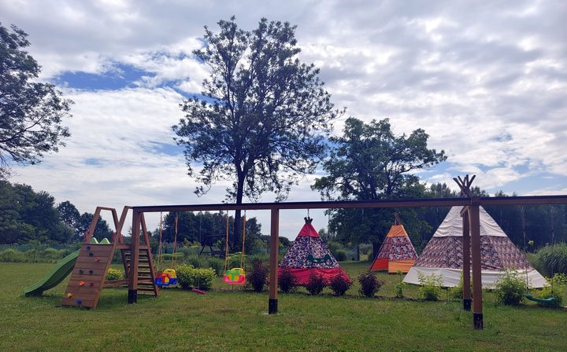
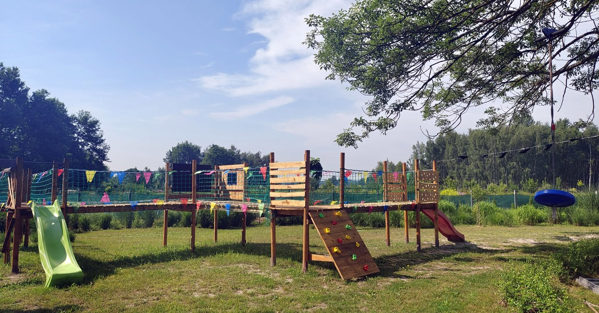
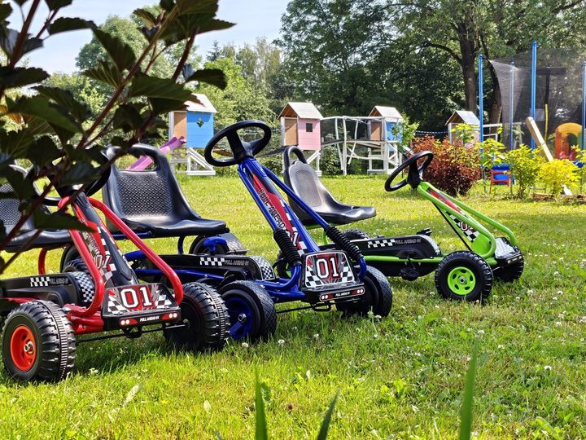
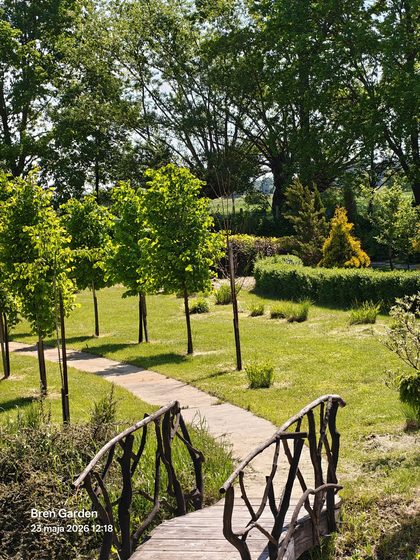
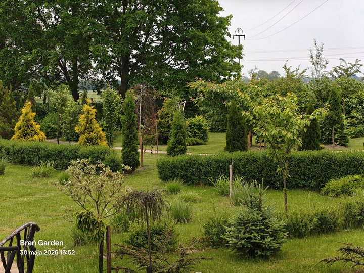

Dzieci
Place zabaw, tipi i przestrzeń do ruchu
Dzieci mają tu co robić: mogą biegać, wspinać się, oglądać kolorowe tipi, zaglądać do zakątków i odkrywać ogród po swojemu.
atrakcje
Breń Garden łączy ogród pokazowy, rodzinny plener i przyrodniczą ścieżkę, którą można rozwijać o opisy QR oraz audioprzewodnik.


Dzieci mają tu co robić: mogą biegać, wspinać się, oglądać kolorowe tipi, zaglądać do zakątków i odkrywać ogród po swojemu.

Kolorowe elementy wprowadzają klimat rodzinnej atrakcji, która jest bardziej swobodna niż typowy park, a bardziej dopracowana niż zwykły plac zabaw.

To one budują tempo zwiedzania. Można przejść przez ogród powoli, zatrzymać się przy roślinach i wykorzystać gotowe punkty do zdjęć.

Największy potencjał ogrodu to różnorodność. Po dodaniu opisów QR każdy ptak, krzew albo trawa może dostać własną historię i ciekawostkę.
Strefa dzieci, strefa zdjęć, strefa ptactwa, strefa roślin ozdobnych, strefa odpoczynku. Dzięki temu gość od razu rozumie, gdzie iść, a właściciel może łatwiej sprzedawać wejścia, sesje i wydarzenia.